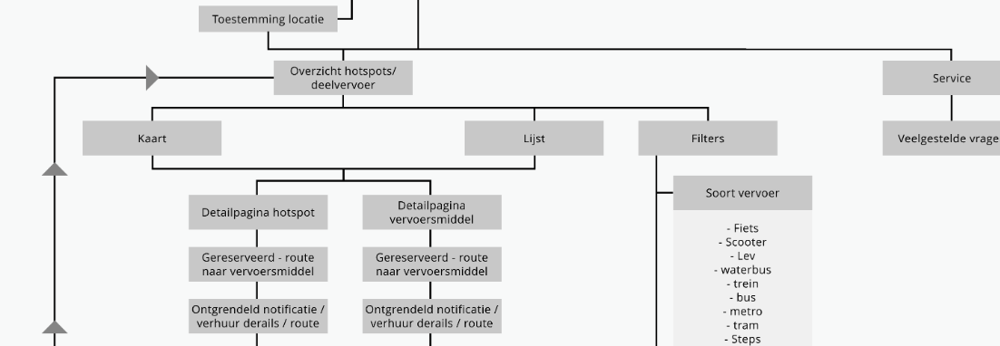

De uitwerking
Interaction design
Om te bepalen welke funtionaliteiten de app moet hebben is er een sitemap gemaakt. Aan de hand van de sitemap konden vervolgens de wireframes worden uitgewerkt. Eerst zijn er basic wireframes gemaakt met grijze vlakken en placeholder tekst. Vervolgens zijn de wireframes ingevuld met iconen, afbeeldingen, titels en teksten ter verduidelijking van de schermen.
De stijl

De eerste stap in het ontwerpen van een stijl was het maken van het logo. In het logo moest het reizen en de hotspots naar voren komen. De pijl staat voor het reizen en het kruis staat voor de hotspots. De app heeft een duidelijke en simpele stijl waardoor het voor de gebruiker overzichtelijk en herkenbaar is. Dit zorgt voor een kloppend geheel. Benieuwd naar de styleguide?
Download styleguide